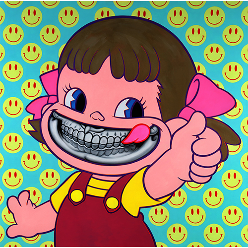
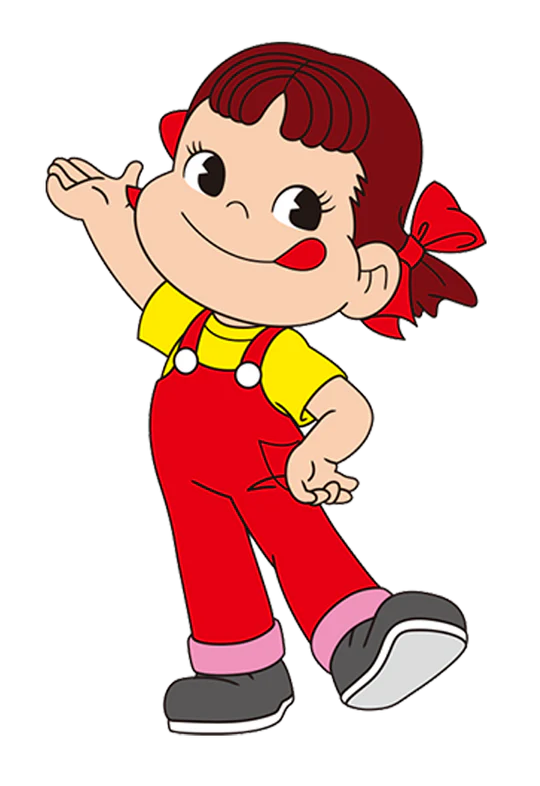
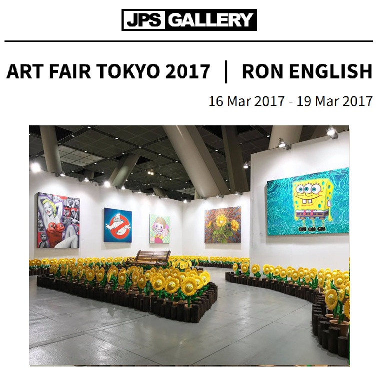
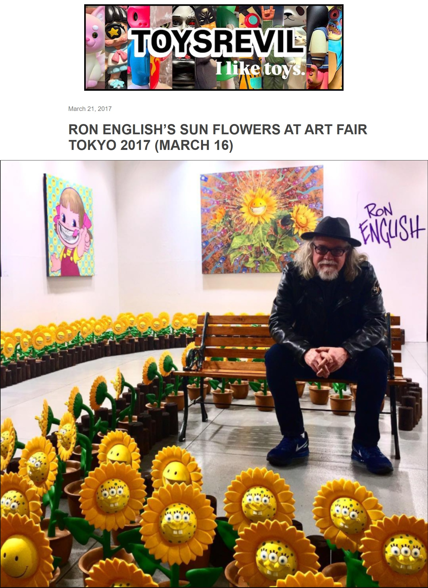

Exhibitions
Art Fair Tokyo 2017, Tokyo International Forum, Tokyo, Japan, March 16–19, 2017.
Literature
Ron English, Original Grin: The Art of Ron English (Paris: Cernunnos, 2019), p. 24. ISBN 978-2374950938.
Notes
The work references Peko-chan, Fujiya’s candy mascot.
Ancillary Documentation
The following materials document the Peko-chan reference, art-fair context, and related online exhibition coverage.



Selected Online Circulation
Selected examples of the work’s online circulation, reproduction, or discussion. This list is not exhaustive; it is intended to document representative appearances of the image beyond formal exhibition and publication records.